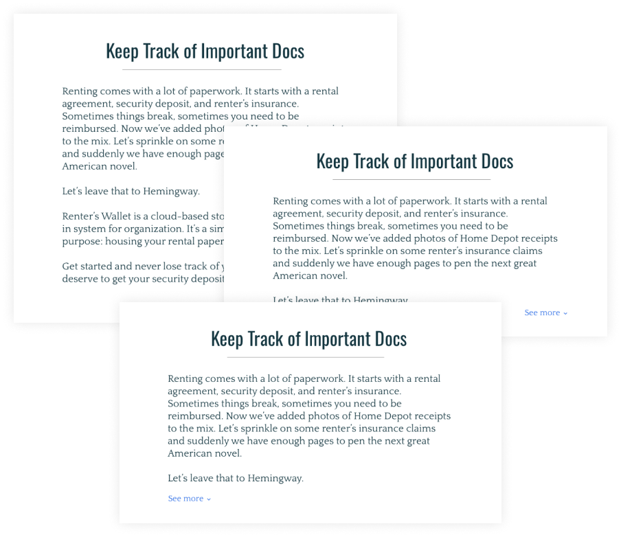

Renter's Wallet
Summary
Renter’s Wallet is a renter-centered cloud storage space that comes pre-loaded with an intuitive organization system. It is a lightweight, frill-free place to store any and every document pertaining to the rental experience.
View PrototypeProblem
Renters are losing key documents in a paper-dominated field, and it is costing them. Move-in damage forms, contractor reimbursement slips, security deposit records, utility account information: the list continues. Renter’s need organization. Furthermore, they are subjected to property management software that is heavily landlord centered with no renter autonomy.
Solution
Clean it up and keep it clean. Renter’s Wallet is a space tailored exclusively for rental-related documents. By virtue of the narrow scope and organization specificity, users are intrinsically encouraged to keep a clean cloud. Renter’s Wallet offers a streamlined organizational system that makes digitizing, sorting, and retrieving files seamless.
Design Roles
- User research
- UX design
- Brand & Identity
- Visual design
Deliverables
RESEARCH
- SWOT Analysis
- User Survey & Interview Analysis
BRAND
- Style Guide
- Logo
- Content Strategy
VISUAL DESIGN
- High Fidelity Clickable Prototype
Specifics
DURATION
- 4 Weeks
TOOLS
- Google Forms
- Whimsical.co
- InVision
- UsabilityHub
- Sketch
Discovery & Research
User Surveys
To better understand users’ behaviors and values, my process began with a survey. I’ve surfaced the highlights below. All statistics are based on a sample size of 15.
BEHAVIORS
- 86.7% of respondents use some form of cloud storage, 92% of which use Google Drive.
- 38.5% of renters (largest segment) are keeping their rental agreement in their email inbox.
- 61.5% of cloud storage users store work and personal files on the same platform.
Drive is a key competitor--a solution will have to provide value where Drive falls short
Users are finding a storage solution but perhaps not the most elegant. There is potential for adoption with a better solution.
The combination is driving cloud clutter.
Separating work and personal could provide value.
VALUE (0-10)
- 92.3% of renters rated accessibility from any device or browser as most important (8-10)
- 77% of renters rated the ability to share files with collaborators as most important (8-10)
- 53.9% of renters indicated having one place to house all rental related items as very important (7-10)
The moderate value indication shows that secondary features such as accessibility and shareability will add value to primary functionality.
Competitive Analysis
To assess market viability, I conducted a SWOT analysis spanning cloud storage and property management software. My representatives were: Google Drive, Tenant Cloud, and Buildium. In sum: Google Drive falls short on organizational motivation, while management software is landlord centered, neglecting key renter needs. Ultimately, this yields an entrance for a cloud storage system designed specifically for renters and rental document organization without the bloat of deep landlord connection. Read the full analysis here.
Full AnalysisUser Personas
I’m pleased to introduce Harper and Alicia. Collectively, they represent Renter Wallet’s target audience: young (~23-35), tech savvy renters in metropolitan areas. Organizer Harper loves nothing more than a clean dashboard, while On-the-go Alicaia is deeply in need of an organization solution. Harper and Alicia are the synthesis of the qualitative and quantitative research proceeding them and are the drivers behind the UX/UI decisions that follow.
Harper
ORGANIZER
Age: 32 | Location: Pittsburgh, PA | Gender: Neutral
Harper is a self-appointed “tech nerd.” They read Product Hunt daily, partly because it helps them stay current on new technologies that might influence their work, but they also just really enjoy it. They are a chronic organizer: Creative Cloud for design work, Drive for work documents, Dropbox for personal storage, and Box for misc. files. They are always looking for a way to streamline organization and are always ready to try a new technology if it has been vetted by the community.
GOALS
- Bolster organization with new technology
- Stay relevant in tech.
- Integrate landlord communication
FRUSTRATIONS
- Strained relationship with landlord
- Moves every year and accumulates many documents
- Applications that try to do to much, and in turn do little well.
“I’m over the Bay, but not tech. I still wake up each morning and scroll through my feeds, hungry for the next thing that makes my life just a little bit better.”
Alicia
ON-THE-GO
Age: 27 | Location: Asheville, NC | Gender: Female
Alicia is proud to call herself technologically savvy. She loves adopting new technology but leaves them before finishing onboarding. She does use Google Drive and Dropbox for work and her personal files. Her work drives are meticulously organized, but her personal ones are a pigsty. She is overwhelmed by the notion of organizing them. Files have accumulated since her early college years. She relies solely on the search bar to find files, which works 70% of the time. She has no idea where her rental documents are but could probably find them if she had to.
GOALS
- Commit to and maintain organization
- Feel secure knowing where important documents are
FRUSTRATIONS
- Restarting is easier than organizing
- Running out of free space on Google Drive
“I would definitely feel a little more adult if I could point to where my rental documents were. I don’t even know if I have renter’s insurance--and I live in a flood plain.”
Branding & Identity
Ideating
Creating brand began with word association and mindmapping. The emergent characteristics were: Clean, Straight Forward, Trustworthy Contemporary and Financial.
Logo
Wallet’s were fun to play with--folded, unfolded, sideways, upside down, empty, and stuffed to the brim. The geometric folded form lent itself nicely to the base of a home or a file. I experimented with the home idea, adding monograms, chimneys, doors, the works. Ultimately I abandoned this direction since it would not scale down legibly.
Experimenting further, the single pocket wallet ambiguously resembled a file icon. To further the file notion, I colored it a more exciting version of the classic and trusted manilla envelope. The cloud emerges from the wallet to clearly communicate the applications function: cloud storage. Lastly, the logo was designed to convey jovial familiarity. The blocky “W” representing “wallet” plays on 90’s word art: catering directly to the 20-30 year old target demographic that grew up on MS Office and Paint.
All in all, the design choices were predicated on communicating a sense of contemporary design on a strong foundation of trust.

Type & Color
Oswald and Quattrocento, are tag-teamed to continue the contemporary yet trustworthy tone. Oswald’s tall and condensed glyphs graft feelings of emboldened seriousness. Quattrocento, our serifed representative, complements Oswald with it’s no frills legibility. All in all, the combination delivers a contemporary sense of trust.
For energy and attention I used a brightened mustard. In order to balance the excitement, I introduce a tinted forest green. This also served the dual purpose of providing a AAA contrast ratio with white text in the foreground. The deep navy brings trust while the powder blue brightens the palette with a modern feel.
Full Brand Vision Full Brand VisionInformation Architecture
User Stories and Flows
The Renter’s Wallet MVP set out to accomplish these high priority items:
- Store all housing-related documents in one application
- Onboard users via email, facebook, or google
- Deliver an organization structure preloaded into user’s accounts
- Enable drag and drop files transfer
- Create new folders and folder hierarchies
- Access files from any browser or device
- Share select documents with landlords or housemates
Wireframes
I began on paper, drawing out each high priority user flow. To get the creativity flowing, I began with 4-ups for key pages. Visualizing the user flows forced me to make some key decisions about the processes. For example, I experimented with a modal-style onboarding flow where the background landing page would be obscured. While this focuses the user on the task at hand, it also hides compelling information about the product. For this reason, I ultimately opted for a minor dim and a slide panel from the right for onboarding.
Clickable PrototypeUsability Testing
This round of user testing found convergence in four distinct domains of the application:
- The software must support the ability to add a file then point it to its destination. It must not depend on where the user initiated the file addition.
- Drag and drop is the most intuitive way to organize files.
- Landlord information was very clear to users. They were easily able to navigate to the correct tab and enter the appropriate information.
- Iconography was unclear. The image-function relationship must be strengthened
Visual Design
Landing Page: A Progression
V1: The idea here was to have a minimalist landing page. A nice gradient that didn’t distract from the CTA and a few spotlight features. A number of factors informed changes here:
- The gradient with colored text did not meet AAA contrast standards.
- Users were not given enough information to make an informed choice about the product, or even really learn what it was.
- The call to action, “here”, left room for ambiguity as to where exactly it would take the user.
V2: The landing page took on a few key changes to remedy the aforementioned problems
- The gradient was darkened and the text was lightened to meet AAA contrast standards.
- “About” copy, as well as a screenshot of the dashboard were added, showcasing the functionality of Renter’s Wallet. This way a user would not have to onboard in order to learn about the product.
- Call to action copy changed from “here” to “get started”, clarifying its function.
Preference Test: I hypothesised that I should truncate the “about” copy, but sought user input. 75% of users preferred option 3: a left aligned button with partial copy exposed.
V3: I incorporated preference test learnings and added polish to the designs.
- Included testimonials from user testing to help establish brand trust.
- Overlapped and diagonally aligned the testimonial with the screenshot of the UI to create some depth to the page and break up the vertical column monotony.
- Added light clouds to the background to brighten the aesthetic and bring a little joviality.

User Interface: A Progression
V1: The onboarding process needed tightening, and navigation needed to be more intuitive.
- Onboarding: The text entry fields did not look active.
- Onboarding: “Sign up” button was too dark and eclipsed the other fields.
- Navbar: profile badge did not need to be nested within the drawer and could be surfaced to the top right corner.
V2: Incorporated the above needs and experimented with color
- Replaced the pastel green with white in order to avoid the “easter” aesthetic and to meet AAA contrast standards.
- Added the inactive button state to the design
Preference Testing: I sought user feedback on navigation panel color. Users were presented with two saturated dark colors, while one, the original, remained white. Users split between color B, #2A6677, and white. Ultimately I opted for the white navbar to preserve a feeling of cleanliness.
High Fidelity User Testing: Users found the application to be highly functional. They were almost flawlessly able to complete all the action oriented tasks. There was convergence around wanting X’s for the modal windows. Voiced in interviews, the aesthetic simplicity was appreciated. The following action items emerged from the interviews, all conducted in person:
- Include an “add new” ghost tile to each page.
- Add caption above screenshot on landing page for context.
- Add X’s to modals for easy exiting.
- Experiment with more color.
V3: Incorporating feedback and adding finishing touches.
- Replaced the primary blue with a forest green to better connote a sense of financial security. Furthermore, the blue was distractingly cheerful, almost childish, which was out of step for rental documents.
- Removed “my profile” and “log out” from the nav bar completely and put them in the profile badge icon.
- Added iconography to the navigation bar to give it a more professional, polished look.
- In accordance with user testing, Included an “add new” ghost tile to each page to encourage adding files and organization
conclusion
Challenge: Accessibility
One challenge throughout the project was meeting web accessibility standards. This ultimately informed every color choice, especially those involving typography. For this reason, I landed at a high contrast white on forest green combination. Designing with accessibility in mind, while challenging, is essential. On my next project I will begin thinking about accessibility earlier on in the branding phase.
Future Work
I’m excited to expand Renter’s Wallet beyond the MVP. The next iteration would have a built out scan feature on mobile so users can quickly upload documents before potentially losing them. Additionally, my initial survey exposed a discrepancy between how users are communicating with their landlord and how they would like to. Users indicated that they would ideally communicate with their landlord via email, but are finding themselves texting or speaking in person. For this reason, I’d like to build in an internal email style communication feature that pushes more tenants and landlords toward the preferred method of communication.
Renter’s Wallet was an exciting and challenging project. I feel more trained in accessible design and more dialed into the rental experience. I look forward to future work here.